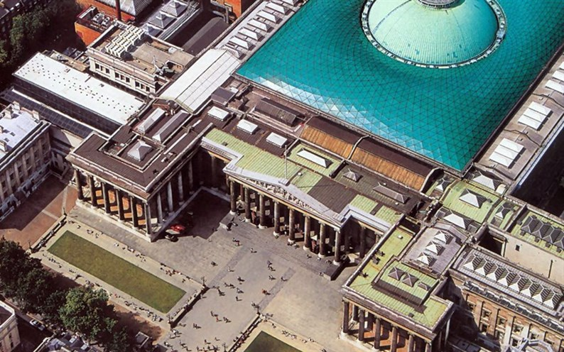

Музеї та галереї
Під час моєї подорожі я відвідав численні музеї та галереї в різних країнах та містах. Один з найпам'ятніших моментів це візит до Лувру в Парижі, де я мав нагоду побачити величні шедеври відомих художників, таких як Леонардо да Вінчі, Рафаель, і Мікеланджело. Також, я зазнав вражень від Національної Галереї мистецтв в Вашингтоні, де я знайшов твори американських майстрів та імпресіоністів.
Найвидатніші музеї світу (11 фото)
Коли Ви вирушаєте подорожувати, є безліч способів скласти свій екскурсійний маршрут. Але практично всі включають в нього відвідування музеїв. Музеї є ідеальним місцем для любителів історії та культури. У наш час найбільші музеї світу пропонують безліч інтерактивних та цікавих розваг, які можуть дозволити Вам відкрити таємницю історії за допомогою власного унікального способу. У цій збірці зібрані 10 музеїв, які є найвідомішими і впізнаваними пам’ятками в світі. Ви будете вражені одним тільки їх зовнішнім виглядом, не кажучи вже про те, що чекає всередині.
-
1. На першому місці подібного списку однозначно буде знаходиться Паризький Лувр.
Без сумніву, найвідоміший музей у світі, Лувр був середньовічною фортецею і палацом королів Франції перш, ніж став музеєм два століття тому. Навіть модернізація площі з додаванням скляної піраміди в її центрі нічого не віднімає від історичної чарівності Палацу Лувру. Колекції музею, які коливаються від народження великих старовинних цивілізацій до першої половини 19-го сторіччя, серед найвидатніших на планеті. Ви знайдете тут роботи найвідоміших художників в історії, таких як да Вінчі і Рембрандт. Головною визначною пам’яткою Лувру є Мона Ліза Леонардо да Вінчі.
-
2. Ермітаж, Санкт-Петербург.
У цього гігантського музею найбільша в світі колекція картин. Це приголомшливе місце, яке висвітлює історію світу від Кам’яного століття до теперішніх часів, а особливо значною є Золота Кімната з її дивовижними дорогоцінними каменями. Музей Ермітажу – найбільш відвідуваний в Росії. Він сценічно розташований уздовж області набережної в Центрі Санкт-Петербурга. Це цілий музейний комплекс, який включає шість різних будівель унікального архітектурного дизайну. Без сумніву, Емітаж – один з найбільших музеїв світу, видатна пам’ятка Санкт-Петербурга .
-
3. Британський музей у Лондоні.
Тут зібрані мільйони творів мистецтва з усіх континентів. Галереї Британського музею присвячені Єгипту, Греції, римській цивілізації, Азії, Африці і середньовічній Європі, простежуючи історію людства і культуру. Тут зберігається мармур Парфенона, який колись прикрашав Парфенон в Афінах. Музей приваблює шість мільйонів відвідувачів щороку. Якщо Ви не можете дістатися до єгипетського Музею, то можете розглянути найбільшу і всебічну колекцію стародавніх єгипетських артефактів за межами Каїра прямо тут. Вражає також новий читальний зал Британського Музею , який Ви бачите на фото
-
4. Єгипетський музей у Каїрі.
У Єгипетському музеї Каїра Ви знайдете повну колекцію єгипетського мистецтва. Серед тисяч скарбів також відомі експонати з гробниці Тутанхамона. У 1835 єгипетський уряд заснував “Службу античних скарбів Єгипту” в спробі зупинити розграбування археологічних пам’яток і влаштувати виставку зібраних експонатів. У 1900 було споруджено будинок єгипетського Музею, де тепер зберігається понад 120,000 об’єктів з доісторичної епохи до греко-римського періоду, включаючи стародавні скульптури Сфінкса. Якщо Ви досліджуєте пам’ятки Єгипту , то не повинні пропустити Єгипетський музей Каїра.
-
5. Галерея Уффіці у Флоренції.
ЮНЕСКО оцінює, що 60% найпопулярніших художніх робіт в світі знаходяться в Італії, а більш ніж половина з них розташована у Флоренції. Галерея Уффіці у Флоренції вразить Вас до глибини душі. Це безперечно одна з найпрекрасніших колекцій картин і скульптур на планеті, з роботами, що відносяться до епохи Відродження, написаними такими майстрами, як да Вінчі, Рафаель, Мікеланджело, Рембрандт, Караваджо і багато інших. Однією з головних визначних пам’яток тут є Народження Венери Ботічеллі.
-
6. Музей Метрополітен у Нью-Йорку.

Створений в 1870, музей Метрополітен зберігає більше ніж два мільйони творів мистецтва з усього світу, від давнини до сучасних часів. Ви знайдете все, від ісламських та європейських картин, до колекцій зброї і броні. Хоча є багато інших великих музеїв в Нью-Йорку, таких як Гуггенхайм, Метрополітен є одним з найбільш суттєвих. Це дійсно один з найбільших музеїв світу.
-
7. Державний музей в Амстердамі.
Державний музей (Rijksmuseum) розташований поблизу від центру Амстердама. Це один з найбільших музеїв, який обов’язково варто відвідати під час поїздки в одну з найкрасивіших європейських столиць. Музей виходить на один з культових водних каналів Амстердама, в той час як з протилежного боку знаходиться простора панорамна площа із зеленою мальовничій галявиною.Усередині Ви можете повністю зануритися в мистецтво і періоди історії Нідерландів. З колекцією майже 1 мільйона експонатів, це ідеальне місце, щоб побалувати себе надихаючими шедеврами Рембрандта, Франса Халса та інших голландських художників.Детальніше про нього читайте в добірці кращих музеїв Амстердама .
-
8. Музей Ватикану.
Значний Музей Ватикану містить 22 окремі колекції, в межах від етруського і єгипетського мистецтва до карт і сучасного релігійного мистецтва. Навіть якщо Ви не релігійні, то все одно будете вражені чистою красою і пишністю купола Мікеланджело і спіральних колон Берніні. Основними цінностями тут є оновлена Сікстинська Капела і Кімнати Рафаеля.
-
9. Музей Прадо в Мадриді.

Незважаючи на те, що його колекція менш значна, Прадо – один з найбільш шанованих і відвідуваних музеїв у світі. Найбільша цінність Прадо – іспанське мистецтво, з роботами Веласкеса, Гойї, Мурілло, Ель Греко і багатьма іншими знаменитостями. Хоча музей і спеціалізується на картинах, тут також знаходиться велика кількість малюнків, монет, медалей та декоративного мистецтва. Неокласичний фасад музею типовий для архітектури 18-го сторіччя міста. Особливу увагу варто звернути на Три Грації Рубенса. Входить до двадцятки найбільш відвідуваних музеїв світу.
-
10. Національний музей Археології в Афінах.
Завершує добірку з найбільшими музеями світу музей Археології в Афінах. Тут Ви можете надовго захопитися шедеврами древньої Греції.
Мої Враження
Відвідання цих музеїв та галерей було справжнім зануренням у світ мистецтва. Я намагався відчути дух кожного твору і зрозуміти висловлювання художника через їхні роботи. Роботи Рафаеля та Леонардо да Вінчі залишили на мені найглибше враження. Мистецтво цих великих майстрів просто дивує своєю красою та глибиною.
Поради для Подорожуючих
Якщо ви також мрієте відвідати мистецькі музеї та галереї, ось декілька порад:
- - Плануйте ваш візит заздалегідь. Деякі музеї мають велику кількість експонатів, і вам може знадобитися багато часу, щоб їх переглянути.
- - Користуйтеся аудіогідами або аудіовідомостями, якщо вони доступні. Це надасть додаткову інформацію про твори мистецтва.
- - Обговорюйте свої враження та думки з іншими відвідувачами. Мистецтво може розумітися кожним по-різному, і це завжди цікаво.
- - Фотографуйте свої улюблені шедеври, але дотримуйтесь правил музею щодо фотографування.
Ця подорож у світ мистецтва залишить у вас незабутні враження і поглибить вашу апреціацію до мистецтва. Не соромтеся ділитися своїми враженнями та досвідом з іншими мистецькими ентузіастами!